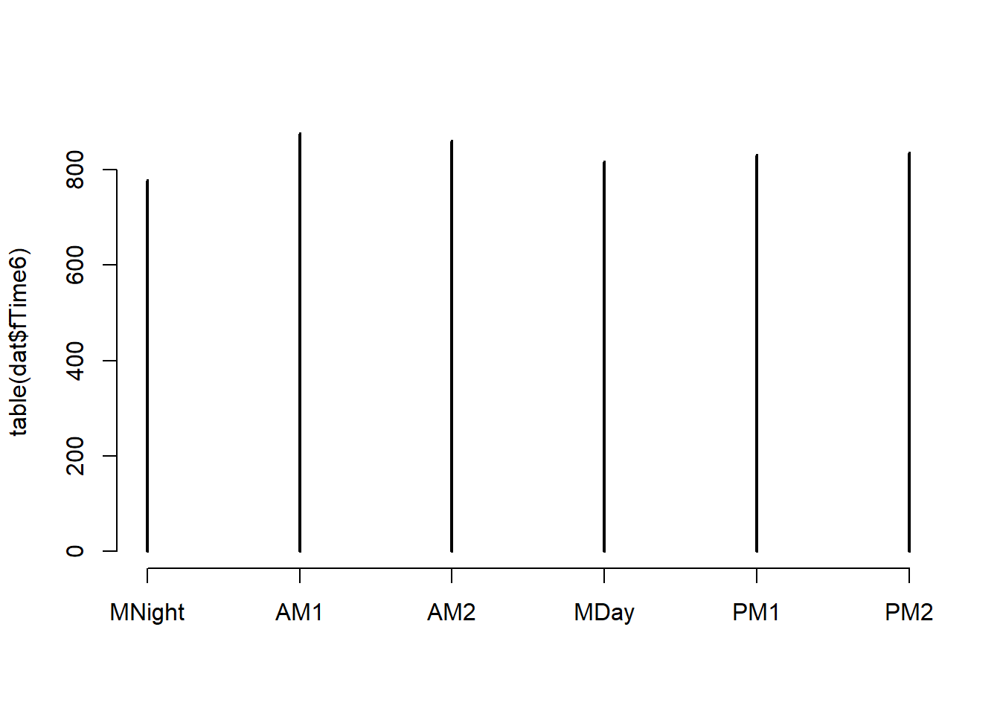
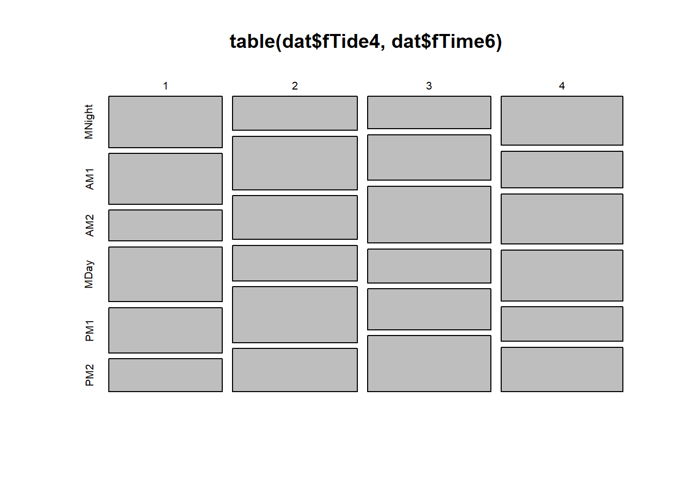
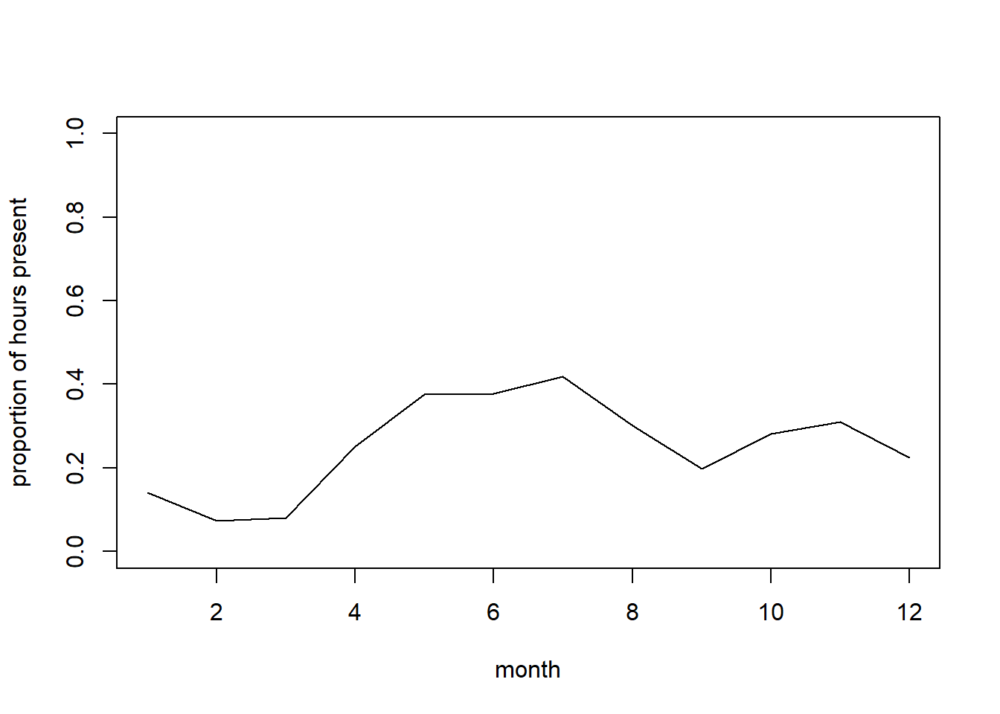
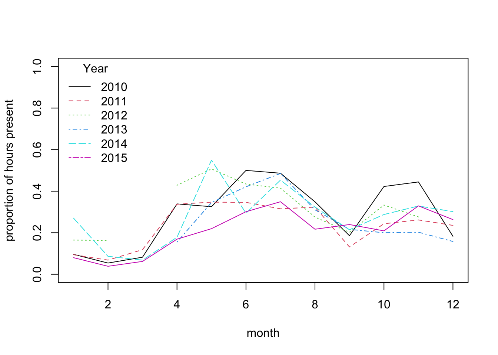
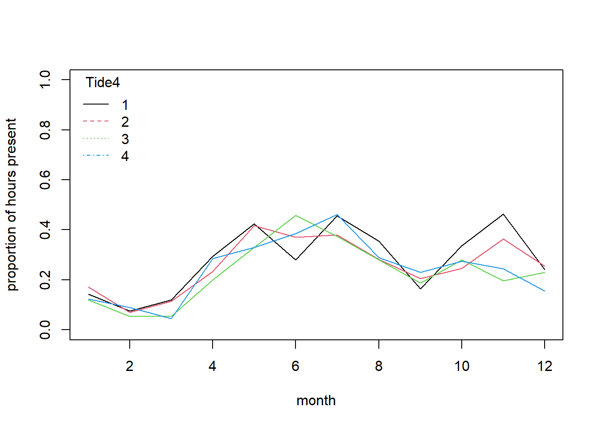
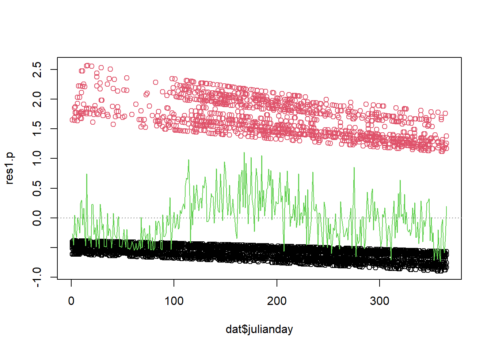

Exercise Solutions
Binomial (Bernoulli) GLM - dolphin behavioural plasticity
1. The data for this exercise were collected by the Cromarty Lighthouse team, using underwater sound recorders (CPOD) to continuously monitor the pattern of presence and foraging behaviour of bottlenose dolphins at Sutors, in the Moray Firth, between 2010 and 2016. Additional background for this study is provided at the end of the exercise, in case of interest.
Variables:
Xindex of the observationspresence: 0 for absence, 1 for presence in 1h time slot. Note that “absence” refers to the absence of a detection, not to the absence of dolphins. We can ignore this in the analysis, but we should keep it in mind when interpreting the results.yearjulianday: day of the year, a proxy for seasonalitymon: month (integer)Time6: time of day binned into 4h periods: MNight (2200-0200); AM1 (0200-0600); AM2 (06:00-10:00); MDay (10:00-14:00); PM1 (14:00-18:00); PM2 (18:00-22:00)Tide4: tidal state (high, descending, low, rising)
It has been suggested that the patterns of use of coastal foraging sites by this dolphin population is quite variable over time. The goal of this exercise is to describe variation in dolphin probability of presence in relation to factors like tidal state, time of day and season (julianday).
As in previous exercises, either create a new R script (perhaps call it GLM_PresAbs) or continue with your previous R script in your RStudio Project. Again, make sure you include any metadata you feel is appropriate (title, description of task, date of creation etc) and don’t forget to comment out your metadata with a
#at the beginning of the line.
2. Import the data file ‘dolphin.csv’ into R (a “small” 5000 records-long subset of the original data set) by running the following chunk of code (please unfold and copy/paste - adjust the path as required).
dat<- read.csv("./data/dolphin.csv", stringsAsFactors= T)
dat$fTime6<- factor(dat$Time6, levels= c("MNight", "AM1", "AM2", "MDay", "PM1", "PM2"))
# reordering chronologically
dat$fTide4<- factor(dat$Tide4)
dat$fMonth<- factor(dat$mon)
str(dat)## 'data.frame': 5000 obs. of 14 variables:
## $ X : int 31458 14027 40551 40456 15894 13109 23797 6053 23445 34584 ...
## $ presence : int 0 1 0 0 1 0 0 0 0 0 ...
## $ year : int 2014 2011 2015 2015 2011 2011 2013 2010 2012 2014 ...
## $ julianday : int 59 226 80 76 312 188 102 256 327 192 ...
## $ tideangle_deg: int 247 356 176 299 127 75 44 73 180 103 ...
## $ mh : int 8 13 7 8 3 7 3 6 14 15 ...
## $ mon : int 2 8 3 3 11 7 4 9 11 7 ...
## $ Per2 : Factor w/ 2 levels "MayJun","RestOfYear": 2 2 2 2 2 2 2 2 2 2 ...
## $ Per4 : Factor w/ 4 levels "MayJun1","MayJun2",..: 4 4 4 4 4 4 4 4 4 4 ...
## $ Time6 : Factor w/ 6 levels "AM1","AM2","MDay",..: 2 3 2 2 1 2 1 1 3 5 ...
## $ Tide4 : int 4 1 3 4 2 2 1 2 3 2 ...
## $ fTime6 : Factor w/ 6 levels "MNight","AM1",..: 3 4 3 3 2 3 2 2 4 5 ...
## $ fTide4 : Factor w/ 4 levels "1","2","3","4": 4 1 3 4 2 2 1 2 3 2 ...
## $ fMonth : Factor w/ 12 levels "1","2","3","4",..: 2 8 3 3 11 7 4 9 11 7 ...
3. Take a look at the structure of this dataframe, and do an initial data exploration.
- Some things you could focus on are:
- look at any correlation/data imbalance (different sample sizes between portions of a predictor variable) for all predictors, or useful combinations of predictors (for example
yearandfMonth,fTide4and time of dayfTime6) - look for factors affecting the probability of presence of dolphins (proportion of time present). Which ones are continuous or categorical? Which ones would your intuition guide you to use for modelling?
- look at any correlation/data imbalance (different sample sizes between portions of a predictor variable) for all predictors, or useful combinations of predictors (for example
- Notes:
- Presence/absence data (Bernoulli) are more difficult than most to explore.
- One approach for data imbalance is to count observations per categories of interest.
table()is a useful way to count the number of observations per category or combinations of categories, e.g.ObsPerMonthYear<- table(dat$year, dat$mon)plot(ObsPerMonthYear)returns a “mosaic plot” where the area of each rectangle is proportional to the count.- For factors affecting the proportion of time present, you could calculate mean presence per category, which is the proportion of time present:
bla<- tapply(dat$presence, list(dat$GroupOfInterest), mean)and plot this usingplot(bla, type= "b", ylim= c(0, 1), xlab= "GroupOfInterest", ylab= "presence") - In more than one dimension,
tmp<- tapply(dat$presence, list(dat$Group1, dat$Group2), mean)calculates the proportion of time present for each combination of Group1 and Group2, andmatplot(tmp, type= "l", ylim= c(0, 1), xlab= "Group1", ylab= "presence", lty= 1)plots the proportion of time present against Group1, with a separate line per Group2 categories.
# count observations per year/month combination and represent as mosaicplot
plot(table(dat$year, dat$mon))
# CPOD failure in Feb-April 2012 and Dec 2012-March 2013
plot(table(dat$julianday))
# broadly even coverage of days of the year - no major gap
plot(table(dat$fTime6))
# fairly even representation of times of the day
# we should have no problem using 'fTime6' as a predictor in the model
plot(table(dat$fTide4, dat$fTime6))
# even representation of tides
# time of day and tidal phase not entirely independent (but not concerning)
# This is balanced enough that we should have no problem using 'fTime6', fTide4
# or their interaction as predictors in the model.
#### Now, investigating variation in probability of encounter:
#
# presence in relation to time of day
mean.per.fTime6<- tapply(dat$presence, list(dat$fTime6), mean)
plot(mean.per.fTime6, type= "l", ylim= c(0, 1),
xlab= "time of day", ylab= "proportion of hours present")
# Probability slightly lower in the middle of the day
# are there seasonal patterns?
mean.per.mon<- tapply(dat$presence, list(dat$mon), mean)
plot(mean.per.mon, type= "l",
ylim= c(0, 1), xlab= "month", ylab= "proportion of hours present")
# Probability of presence lower in Jan-March?
# presence in relation to tide
mean.per.fTide4<- tapply(dat$presence, list(dat$fTide4), mean)
plot(mean.per.fTide4, type= "b", ylim= c(0, 1),
xlab= "tidal phase",
ylab= "proportion of hours present")
# No obvious effect of tidal phase on average?
# If interested, we could also ask more complex questions, involving interactions between predictors, for example:
# are seasonal patterns similar between years?
# let's calculate the mean per month for each year,
# and plot the seasonal pattern lines for individual years together
mean.per.month.year<- tapply(dat$presence, list(dat$mon, dat$year), mean)
# (month in rows, years in columns)
# matplot draws one line per column (year)
matplot(mean.per.month.year, type= "l",
ylim= c(0, 1), xlab= "month", ylab= "proportion of hours present")
legend(x= "topleft", legend= colnames(mean.per.month.year),
bty= "n", # no bounding box for the legend
col= 1:ncol(mean.per.month.year),
lty= 1:ncol(mean.per.month.year),
title= "Year")
# This suggests broadly similar seasonal patterns of variation across years,
# with very low probability of presence from Jan to March
# We could also explore if the effect of some predictors changes between seasons:
# Seasonal variation in diel pattern
mean.per.month.fTime6<- tapply(dat$presence, list(dat$mon, dat$fTime6), mean)
matplot(mean.per.month.fTime6, type= "l",
ylim= c(0, 1),
xlab= "month", ylab= "proportion of hours present", lty= 1)
legend(x= "topleft", legend= colnames(mean.per.month.fTime6),
bty= "n", # no bounding box for the legend
col= 1:ncol(mean.per.month.fTime6),
lty= 1:ncol(mean.per.month.fTime6),
title= "Time6")
# stronger diel pattern in later part of the year:
# the lines for different parts of the day diverge quite
# strongly from Sept to Jan.
# are seasonal patterns similar between fTide4 levels?
# let's calculate the mean per month for each tidal stage,
mean.per.month.fTide4<- tapply(dat$presence, list(dat$mon, dat$fTide4), mean)
matplot(mean.per.month.fTide4, type= "l",
ylim= c(0, 1),
xlab= "month", ylab= "proportion of hours present", lty= 1)
legend(x= "topleft", legend= colnames(mean.per.month.fTide4),
bty= "n", # no bounding box for the legend
col= 1:ncol(mean.per.month.fTide4),
lty= 1:ncol(mean.per.month.fTide4),
title= "Tide4")
# no dramatic change in pattern of tide use across seasons,
# as all the lines follow a broadly similar trajectory:
# the probability of sighting is mostly affected by season.
# There are variations among tide levels but more subtle.
# Would such an interaction turn out to be significant in a model?
4. Let’s fit a model for these data. You will need to specify a Binomial (Bernoulli) GLM (using glm() and the appropriate family argument). To start with, include the main effects of season (using the numerical day of the year), and tidal state and time of day as categorical predictors: julianday + fTide4 + fTime6.
PA1<- glm(presence ~ julianday + fTide4 + fTime6, family= binomial, data= dat)
5. Obtain summaries of the model output using the summary() function. How do you interpret each coefficient? Is this model biologically sensible?
summary(PA1)
##
## Call:
## glm(formula = presence ~ julianday + fTide4 + fTime6, family = binomial,
## data = dat)
##
## Deviance Residuals:
## Min 1Q Median 3Q Max
## -1.0839 -0.8044 -0.7033 1.3490 2.0119
##
## Coefficients:
## Estimate Std. Error z value Pr(>|z|)
## (Intercept) -0.9987765 0.1138169 -8.775 < 2e-16 ***
## julianday 0.0021526 0.0003199 6.729 1.71e-11 ***
## fTide42 -0.0991562 0.0916952 -1.081 0.2795
## fTide43 -0.2695689 0.0941676 -2.863 0.0042 **
## fTide44 -0.1853124 0.0930287 -1.992 0.0464 *
## fTime6AM1 -0.1622919 0.1073545 -1.512 0.1306
## fTime6AM2 -0.5147451 0.1131952 -4.547 5.43e-06 ***
## fTime6MDay -0.6448763 0.1157191 -5.573 2.51e-08 ***
## fTime6PM1 -0.6481564 0.1161442 -5.581 2.40e-08 ***
## fTime6PM2 -0.0544823 0.1079546 -0.505 0.6138
## ---
## Signif. codes: 0 '***' 0.001 '**' 0.01 '*' 0.05 '.' 0.1 ' ' 1
##
## (Dispersion parameter for binomial family taken to be 1)
##
## Null deviance: 5738.9 on 4999 degrees of freedom
## Residual deviance: 5613.0 on 4990 degrees of freedom
## AIC: 5633
##
## Number of Fisher Scoring iterations: 4
# "(Intercept)" is the predicted value on the link (logit) scale for julianday = 0, tidal
# state 1 around midnight ("fTime6MNight")
# "julianday" is the slope of day of year, assumes a linear increase
# (on the logit scale) from 1st Jan to 31st Dec
# "fTide4X" is the estimated difference (on the logit scale) between
# tidal states 1 and X
# "fTime6X" is the estimated difference (on the logit scale) between
# periods of the day 1 and X
# A mathematical description of the model
# (more or less how I would present it in the methods section of a paper):
# presence ~ Bernoulli(p) or presence ~ Binomial(N= 1, p)
# log(p / (1-p)) = -0.999 + 0.0022*julianday
# -0.269 * fTide42 -0.185 * fTide43 -0.162 * fTide44
# -0.099 * fTime6AM1 -0.514 * fTime6AM2
# -0.644 * fTime6MDay -0.648 * fTime6PM1
# -0.054 * fTime6PM2
6. Are all the terms significant? If not, simplify the model. Remember to choose the correct ANOVA method (sequential or not), and the appropriate test. What is the proportion of deviance explained?
drop1(PA1, test= "Chisq")
## Single term deletions
##
## Model:
## presence ~ julianday + fTide4 + fTime6
## Df Deviance AIC LRT Pr(>Chi)
## <none> 5613.0 5633.0
## julianday 1 5659.0 5677.0 45.970 1.201e-11 ***
## fTide4 3 5622.1 5636.1 9.105 0.02793 *
## fTime6 5 5682.1 5692.1 69.074 1.597e-13 ***
## ---
## Signif. codes: 0 '***' 0.001 '**' 0.01 '*' 0.05 '.' 0.1 ' ' 1
# all terms significant; nothing to drop
# out of interest, the total proportion of deviance explained is
(PA1$null.deviance - PA1$deviance) / PA1$null.deviance
## [1] 0.0219393
# 2.2%, very low!
7. Let’s now produce plots to validate the model, using Pearson residuals. The usual tools are not very helpful with a GLM for Bernoulli data (you can try anyway), but we can get a bit further by using the binnedplot() function in the arm package. For numerical variables, binnedplot() splits the numerical variable into discrete bins, and plots the mean of the residuals for each bin. These means should be randomly distributed around zero (and ideally, close to zero when the sample size is large).
par(mfrow= c(2, 2))
plot(PA1) # not very useful
# to make sense of what we are seeing, we can add colors: red
# for residuals of presence data, black for residuals of absence data
plot(PA1, col= dat$presence + 1)
# Not very telling either
# let's plot against predictors:
res1.p<- resid(PA1, type= "pearson")
par(mfrow= c(2, 2))
plot(res1.p ~ dat$fTide4) # boxplot (x axis is a factor)
plot(res1.p ~ dat$fTime6) # boxplot
plot(res1.p ~ dat$julianday, col= dat$presence + 1) # scatterplot
# Can't see anything useful.
# Use arm if you can:
# computes the mean of residuals per bin of numerical
# variables (should be randomly distributed around zero).
# You need to convert categorical variables into
# numerical for the function to work
library(arm)
par(mfrow= c(2, 2))
binnedplot(x= as.numeric(dat$fTide4), y= res1.p, xlab= "Tidal state")
binnedplot(x= as.numeric(dat$Time6), y= res1.p, xlab= "Time of day")
binnedplot(x= dat$julianday, y= res1.p, xlab= "Day of the year", nclass= 100)
8. Are you happy with the diagnostic plots?
# things look fine with Tide4 and Time6, but clearly some unwanted
# patterns in julianday: the mean of the residuals
# tends to be far from zero and doesn't look random at all.
# This suggests a non-linear effect of the day of the year on the response
# This is rather expected indeed: it wouldn't make biological sense for
# the probability of presence to increase from 1st of Jan to 31st of Dec,
# and then drop suddenly to start low again at Jan 1st the next year.
# Dolphins don't normally evaporate on the new year.
# There are several ways the non-linearity could be addressed.
# one of the most straightforward with lm or glm is to split
# continuous predictors into bins and to treat them as categorical.
# In this way, a mean is estimated for each bin of the variable,
# and no assumption is made about the shape of the relationship.
# Months are one of many possible ways to group the days
# of the year into discrete categories
# (we could replace julianday by fMonth for example).
9. Assuming that the model is fine as it is, let’s plot the predictions for the probability of presence in relation to time of day fTime6. You will need to set the value of other predictors fTide4, julianday at a fixed level of your choice, e.g. tidal state “1” and day 180 (approx the middle of the year). Optionally, you can add the confidence intervals around the predictions (highly recommended in a report).
- Calculation of confidence intervals:
- As for the Poisson GLM, you will need to calculate the lower and upper bounds of the 95% CI on the link scale (same method)
- Only then convert these to the response scale
- Don’t forget that the link function is different though, and so is the function for the back-transformation
- In R you can do the back-transformation yourself using the equation provided in the lecture, or using the pre-made
plogisfunction.
- Suggested steps:
- create a
data.framecalledXcontaining the data to predict for. - use
predictwith the appropriate options to obtain the fitted values on the link scale and for being able to calculate the confidence intervals later. Store in objectZ. - I suggest you plot the predictions for each level of your categorical predictor as dots using
plot(Z$fit). (Some people prefer bars usingbarplot(Z$fit), but this can make drawing confidence intervals slightly harder) - in X, add columns for the fitted values and their confidence intervals, on the response scale (to be calculated).
- Because in the model the predictions are for categorical predictors, you will need to draw a vertical error bar for each predicted value
- This can be done using the
arrowsfunction, with argumentsx0andy0, the X,Y coordinates of the starting point of the arrows, andx1andy1, the X,Y coordinates of the end point of the arrows. See?arrowsfor further formatting options. - Note that for vertical bars like we want,
x0andx1should the same, andy0andy1are the lower and upper bounds of the confidence intervals that you calculated.
- create a
The code is available below for you to unfold, if you don’t want to try solving this puzzle yourself (you are always welcome to ask demonstrators for help).
PA1.dat4pred<- data.frame(fTime6= levels(dat$fTime6),
julianday= 180, fTide4= "1")
PA1.pred<- predict(PA1, PA1.dat4pred, type= "link", se.fit= T)
# Convert predictions to the response (probability) scale.
# And add them to the prediction data frame (that bit is optional)
PA1.dat4pred$fit.resp<- exp(PA1.pred$fit)/(1+exp(PA1.pred$fit))
# or plogis(PA1.pred$fit)
# lower 95% CI
PA1.dat4pred$LCI<- plogis(PA1.pred$fit - 1.96*PA1.pred$se.fit)
# upper 95% CI
PA1.dat4pred$UCI<- plogis(PA1.pred$fit + 1.96*PA1.pred$se.fit)
par(mfrow= c(1, 1))
plot(x= 1:6, y= PA1.dat4pred$fit.resp,
pch= 16, cex= 1.4, xlab= "Section of day",
ylab= "Fitted probability", ylim= c(0, 1),
main= "Predictions for time of day\n(assuming Tidal state 1 and day 180)")
arrows(x0= 1:6, x1= 1:6,
y0= PA1.dat4pred$LCI, y1= PA1.dat4pred$UCI,
length= 0.02, angle= 90, code= 3)
10. Optional: Repeat question 9 for the predictions according to levels of fTide4, and then values of julianday, each time fixing other variables at a value of your choice.
par(mfrow= c(2, 2)) # we will need 3 plots
# repeat plotting of predictions for fTime6
PA1.dat4pred<- data.frame(fTime6= levels(dat$fTime6),
julianday= 180, fTide4= "1")
PA1.pred<- predict(PA1, PA1.dat4pred, type= "link", se.fit= T)
PA1.dat4pred$fit.resp<- plogis(PA1.pred$fit)
# lower 95% CI
PA1.dat4pred$LCI<- plogis(PA1.pred$fit - 1.96*PA1.pred$se.fit)
# upper 95% CI
PA1.dat4pred$UCI<- plogis(PA1.pred$fit + 1.96*PA1.pred$se.fit)
plot(x= 1:6, y= PA1.dat4pred$fit.resp,
pch= 16, cex= 1.4, xlab= "Section of day",
ylab= "Fitted probability", ylim= c(0, 1),
main= "Predictions for time of day\n(assuming Tidal state 1 and day 180)",
xaxt= "n") # supress automatic x axis (we will draw our own improved axis)
arrows(x0= 1:6, x1= 1:6,
y0= PA1.dat4pred$LCI, y1= PA1.dat4pred$UCI,
length= 0.02, angle= 90, code= 3)
axis(side= 1, at= 1:6, label= levels(dat$fTime6))
# plotting of predictions for julianday
julianday.seq<- 1:365
PA1.dat4pred<- data.frame(julianday= julianday.seq,
fTime6 = "PM2", fTide4= "1")
PA1.pred<- predict(PA1, PA1.dat4pred, type= "link", se.fit= T)
PA1.dat4pred$fit.resp<- plogis(PA1.pred$fit)
# lower 95% CI
PA1.dat4pred$LCI<- plogis(PA1.pred$fit - 1.96*PA1.pred$se.fit)
# upper 95% CI
PA1.dat4pred$UCI<- plogis(PA1.pred$fit + 1.96*PA1.pred$se.fit)
plot(x= julianday.seq, PA1.dat4pred$fit.resp,
pch= 16, cex= 1.4, xlab= "Day of the year",
ylab= "Fitted probability", ylim= c(0, 1),
main= "Predictions per day\n(assuming Time = PM2 and Tidal state 1)", type= "l", lwd= 1.5)
lines(x= julianday.seq, y= PA1.dat4pred$LCI, lty= 3)
lines(x= julianday.seq, y= PA1.dat4pred$UCI, lty= 3)
# plotting of predictions for fTide4
PA1.dat4pred<- data.frame(fTide4= levels(dat$fTide4),
fTime6 = "PM2", julianday= 180)
PA1.pred<- predict(PA1, PA1.dat4pred, type= "link", se.fit= T)
PA1.dat4pred$fit.resp<- plogis(PA1.pred$fit)
# lower 95% CI
PA1.dat4pred$LCI<- plogis(PA1.pred$fit - 1.96*PA1.pred$se.fit)
# upper 95% CI
PA1.dat4pred$UCI<- plogis(PA1.pred$fit + 1.96*PA1.pred$se.fit)
plot(1:4, PA1.dat4pred$fit.resp,
pch= 16, cex= 1.4, xlab= "Tidal state",
ylab= "Fitted probability", ylim= c(0, 1),
main= "Predictions for tide\n(assuming Time = PM2 and day 180)",
xaxt= "n") # supress x axis (we will draw our own)
axis(side= 1, at= 1:4, label= levels(dat$fTide4))
arrows(x0= 1:4, x1= 1:4,
y0= PA1.dat4pred$LCI, y1= PA1.dat4pred$UCI,
length= 0.02, angle= 90, code= 3)
12. How satisfied are you with the model, and with all the assumptions being met? What have you learned from it, with respect to the initial aims of the study? Are there areas of improvement?
# at Sutors,
# dolphins are more likely to be present at night than during the day;
# They have a statistically significant preference for
# certain tidal states, but the difference does not seem biologically relevant;
# The model suggests an increase in the probability of presence from the
# beginning to the end of the calendar year, but this is biologically unlikely
# and more likely a consequence of the inadequate assumptions made
# in the model (i.e., a linear effect of day of the year)
# This model only has additive (main) effects.
# It doesn't ask if there are interactions between the variables.
# For example, the preference for times of day may depend on season,
# or the preference for tidal stages may vary according to time of day or
# time of the year, depending on how these cycles influence
# the availability of prey.
# The model could be improved by allowing for a non-linear effect
# of the time of the year (for example by using fMonth instead of
# julianday), and by allowing interactions between the predictors
End of the Binomial (Bernoulli) GLM - dolphin behavioural plasticity exercise
Note: If you cannot install the arm package and access its binnedplot function, you can use this “DIY” alternative instead, in the code chunk below. The green line shows the mean of the residuals for each value or bin of the X variable.
par(mfrow= c(1, 1))
# plot the residuals against julianday
plot(res1.p ~ dat$julianday, col= dat$presence + 1)
# get the mean of the residuals for each 1 day of julianday
day.means<- tapply(res1.p, list(dat$julianday), mean)
# convert ordered bin labels into numbers (1 to 365)
day.vals<- as.numeric(names(day.means))
lines(day.means ~ day.vals, col= 3)
abline(h= 0, lty= 3, col= grey(0.5))
For info, background on the data and the study can be found in this short video, courtesy of Paul Thompson. The exercise can be done entirely without consulting this. I recommend you watch this or any companion material (the referenced paper) outside the synchronous session, to make the most of the time you have with demonstrators to progress on the exercises.
For info, the full original data (10 Mb) are publicly available here: [https://datadryad.org/stash/dataset/doi:10.5061/dryad.k378542], in case of interest.